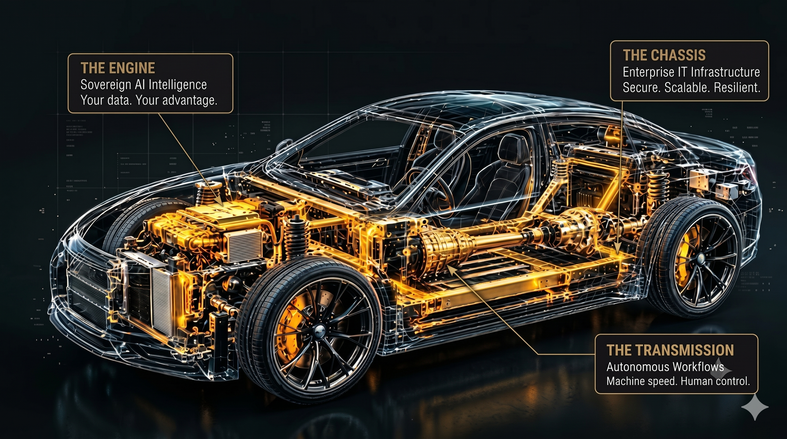
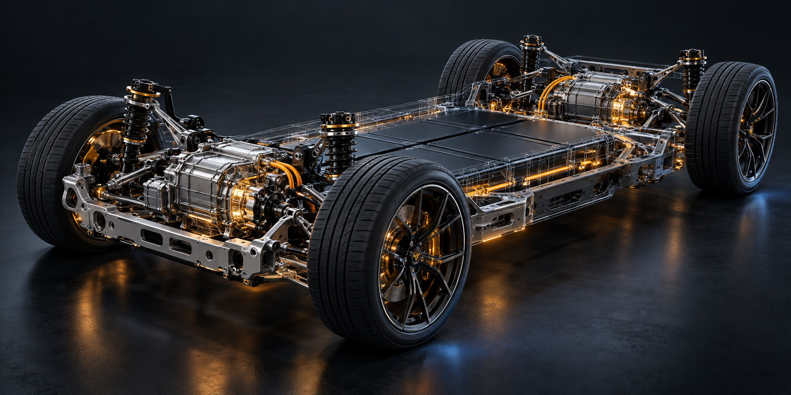

Connect your tools
Bring information from your existing accounts, sales and office tools into the right place.
Secure IT. Private AI. Reliable automation. Your team stays in control while routine work gets done faster.

Example: following up on an enquiry
AI works best when it fits your IT systems and your way of working. We connect the tools, add clear checks, and keep people in control.
Bring information from your existing accounts, sales and office tools into the right place.
Help staff find information in approved business documents, with sources and human checks.
Connect requests, reminders and approvals so your team spends less time chasing updates.

AI projects can struggle when older systems are hard to connect or protect. We make your systems ready to work together.
Explore 24 practical ways to connect your cloud, apps, business data and AI. Start with what you need to achieve, then see how the parts work together.
24 example architectures
Choose a card to see the system flowConnect office systems and cloud apps with one staff sign-in. A good fit for teams already using Microsoft tools.
Before going livePlan private network access, separate production from testing, and confirm the regions used for data and backups.
Run customer portals, booking systems and mobile backends that need to handle changing demand.
Before going liveUse multiple availability zones, private databases, managed secrets and tested restore procedures. Use EKS when Kubernetes is needed.
Build web services and APIs without maintaining application servers. Useful for new services and uneven workloads.
Before going liveSet minimum and maximum instances, protect database connections, and check service availability in the chosen region.
Run container apps in your own environment or across approved clouds. Useful when location and operating control matter.
Before going liveAllow for platform support, storage resilience, cluster upgrades and a separate recovery location. A cluster alone is not disaster recovery.
A flexible stack for customer portals, booking tools and internal business dashboards.
Before going liveKeep permissions in the API, validate inputs, limit requests and decide whether Redis is actually needed.
Build staff portals and business applications that fit an existing Microsoft environment.
Before going liveChoose managed or self-hosted SQL based on compatibility, licensing and recovery needs. Keep app and database access separate.
Support transaction-heavy systems, customer services and integration with older enterprise platforms.
Before going liveStart with a modular application when possible. Split into microservices only where independent scaling or ownership justifies it.
Launch a product catalogue or online store with a familiar content and order management system.
Before going liveUse supported plugins, secure admin access, test updates and backups, and use a hosted checkout to reduce card-data exposure.
Connect finance, orders and stock data from SAP to customer apps and other business systems.
Before going liveUse supported SAP APIs and business events. Avoid direct writes to ERP tables; confirm licensing and the integration edition needed.
Connect existing Oracle databases to new portals and reporting tools without replacing the core system.
Before going liveUse supported APIs for ERP products. Database replication and change capture need version, licensing and load checks.
Move customer enquiries into sales and service processes, with connections to finance and order systems.
Before going liveAgree which system owns each record. Design for API limits, duplicate prevention, customer permissions and integration retries.
Connect everyday tasks such as invoice follow-up, approval requests and service ticket routing.
Before going liveProtect credentials, verify webhooks, and design safe retries. Use a queue and workers when workload or availability needs grow.
Bring sales, finance and operations data together so teams can use consistent business reports.
Before going liveDefine data owners, access rules and freshness targets. Apply warehouse usage limits and test financial reporting logic.
Process large files, historical records and mixed datasets for analytics and machine learning.
Before going liveUse a data catalogue, access controls, table maintenance and workload limits. Separate sensitive data and manage retention.
Share order, stock or payment-status changes between systems without making every app wait for the next one.
Before going livePlan message schemas, ordering, replay and consumer lag. Use idempotent consumers so replay does not create duplicate business actions.
Give growing businesses clear sales and operations reports without starting with a large data platform.
Before going liveUse read-only reporting access, agree metric definitions and display data freshness. Add a warehouse when scale justifies it.
Let staff search company manuals and policies using models hosted in your own environment.
Before going liveSize compute for the chosen model and concurrent users. Test retrieval, access filtering and answer quality; no answer is guaranteed correct.
Use managed AI and company documents for staff support, with existing Microsoft access controls.
Before going liveConfirm model and search availability, data processing terms and region. Use private connectivity where supported and validate document permissions.
Add document search and AI support to customer or staff applications using managed Google Cloud services.
Before going liveValidate the model, retrieval quality, safety rules, regional support and data handling terms before opening access to users.
Deploy demand forecasts, risk scores or image classification models with a controlled release process.
Before going liveCompare against a simple baseline. Monitor drift, response time and business impact; keep rollback and retraining procedures.
Build environments and release software through approved, repeatable changes instead of manual server edits.
Before going liveProtect deployment credentials and Terraform state. Scan images, separate environments and test database migration rollback plans.
See application faults, slow requests and infrastructure issues in one place, with alerts for the right team.
Before going liveSet service targets, useful alert thresholds and retention limits. Remove sensitive fields and control high-cardinality telemetry.
Give staff one controlled way to access internal applications, with multi-factor sign-in and clear permissions.
Before going liveSingle sign-on is one layer of security. Also plan device controls, network restrictions, privileged access and emergency account recovery.
Protect databases and business systems, with a recovery plan the team can actually practise.
Before going liveAgree recovery time and data-loss targets. Separate backup credentials, keep an offsite copy and schedule full restore exercises.
Every business needs a different mix. We choose the stack around your existing systems, budget, support team and where your data needs to stay.
Example architectures, not fixed packages. Product names and logos belong to their owners; their use does not imply a partnership.Tell us what you want to improve and what you use today. Get a practical starting plan, with the right questions to ask before you invest.
Get a clear plan for your business, then build it with experienced engineers. We help you use AI safely and make sure your team stays in control.
Talk to an Experienced Systems Engineer →Speak directly with an engineer. Your conversation stays confidential.